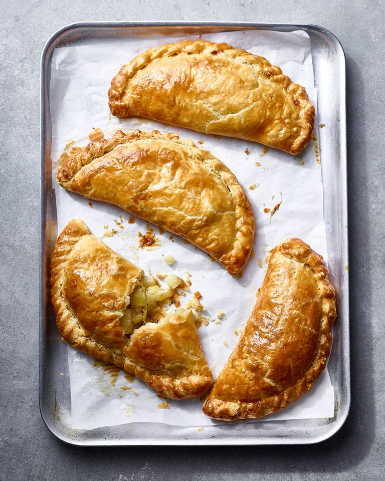

Cheese and Onion Pasty

Description
A cheese and onion pasty is a classic staple of Cornish cuisine.
It is a great dinner, served with homemade chips and baked beans.
But you could just as easily enjoy yours with a quick pickle
on a picnic, as they taste great hot or cold. However
you eat them, I recommend a good shake of malt vinegar.
Ingredients
- 40g unsalted butter
- 1 medium waxy potato (about 250g), cut into 1cm dice
- 200g cheddar, grated
- 2-3 tbsp double cream (optional)
For the Pastry:
- 300g plain flour, plus extra to dust
- 200g cold unsalted butter, cubed
- 1 medium free-range egg, lightly beaten
- 40ml milk
- 2 tsp white wine vinegar
- 1 free-range egg, beaten, to glaze
Directions
- To make the pastry, put the flour and salt in a mixing bowl. Rub in the cubed butter between your thumbs and forefingers until the mixture resembles fine breadcrumbs. Stir in the egg, milk, and vinegar using a table knife. Using your hands, work the mixture until it comes together to form a dough – it should be soft but not sticky. Shape the dough into a ball on a flour-dusted work surface, flatten into a disc and cover in cling film. Set aside in the fridge for at least 30 minutes to rest (see Make Ahead)..
- For the filling, melt the butter in a heavy-bottomed pan over medium heat. Add the onions and cook, covered for 10 minutes until softened. Stir regularly and add a little water if they start to look dry. Add the potato to the onions and continue to cook for 5-10 minutes. Remove from the heat and set aside to cool.
- Heat the oven to 180ºC fan/gas 6. Divide the pastry into 4 equal pieces. Roll out one piece on a lightly floured surface to form a circle roughly 4-5mm thick (keep the rest of the pastry wrapped in the fridge).
- Stir the cheddar and cream (if using) through the cooled potato mixture, season with a good pinch of salt and lots of freshly ground black pepper (you want the mix to be heavily seasoned). Pile a quarter of the cooled filling on one half of the pastry, leaving a 3cm border around the edge. Brush the edges with a little beaten egg, then fold the other half over and press to enclose the filling. Crimp the edges of the pastry and place on a large, lined baking sheet. Repeat with the remaining pastry and filling. Brush the pasties with the egg, poke with a fork so steam can escape, then bake for 25-30 minutes until golden (see Make Ahead)
- Serve the pasties, hot from the oven with chips and baked beans, or your favourite pickle if you like.